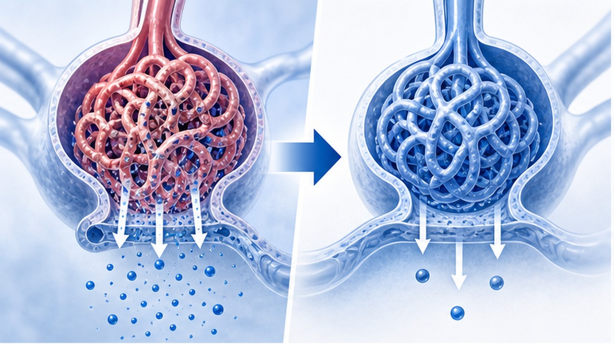
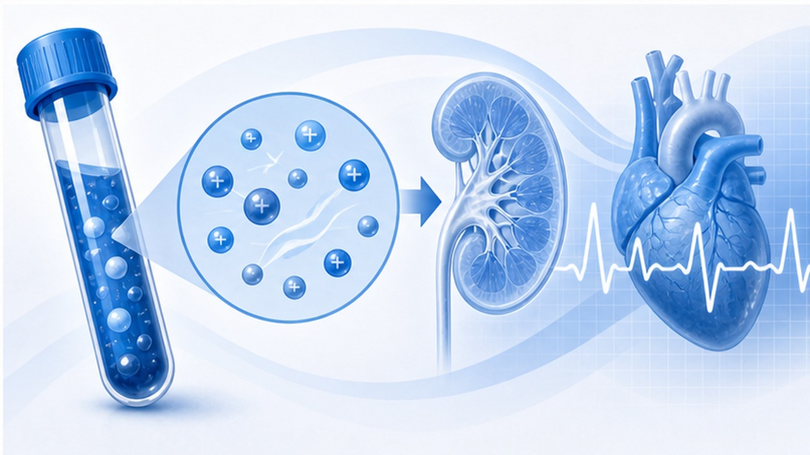
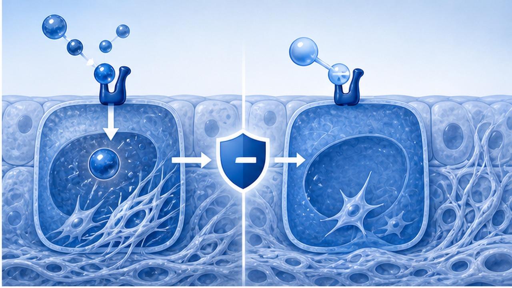
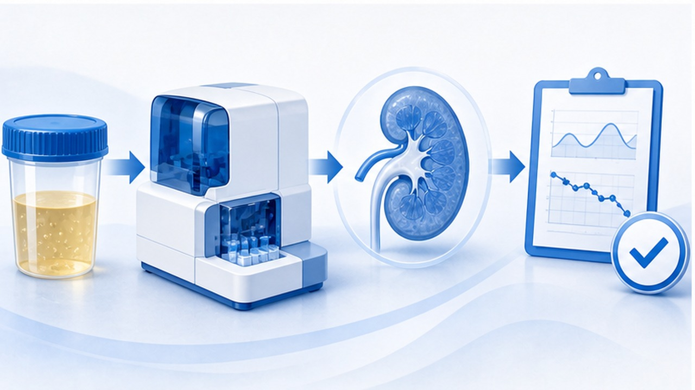

T2D CKD 근거가 T1D 알부민뇨 환자로 확장되는 첫 phase 3 근거다.
RANDOMIZED · 242명 · T1D + CKD + uACR 200-5000 mg/g, ACEi/ARB 복용 중. · PRIMARY · 25% · 6개월 uACR 위약 대비 추가 감소. geometric mean ratio 0.75. · SAFETY · 10.1% · 고칼륨혈증: finerenone 10.1% vs placebo 3.3%. · 핵심 메시지 — uACR surrogate endpoint는 명확히 좋아졌다. 단, hard renal/CV outcome을 입증한 연구는 아니며 칼륨·eGFR 모니터링을 전제로 해석해야 한다.

제1형 당뇨병의 신장질환은 젊은 나이부터 장기 위험을 만든다.
혈당 조절 — A1c 목표 개별화, 저혈당 피하기 · 혈압 조절 — RAAS blockade 중심 · ACEi/ARB — 알부민뇨 동반 CKD의 기본축 · SGLT2i — T1D에서는 DKA 위험과 허가 제한 때문에 일반 표준으로 보기 어렵다
잔여 알부민뇨 — ACEi/ARB에도 진행 위험 지속 · 심혈관 위험 — CKD 자체가 독립 위험인자 · 근거 공백 — T2D에서 입증된 약제가 T1D에는 거의 시험되지 않음 · 치료 피로 — 장기 추적·검사 순응도가 관건
hard outcome trial이 아니라, 6개월 uACR 변화를 1차 평가변수로 둔 registration trial이다.
성인 T1D + CKD. eGFR 25-<90 mL/min/1.73m².
uACR 200-<5000 mg/g. 이미 의미 있는 알부민뇨가 있는 군.
ACE inhibitor 또는 ARB 복용 중인 환자.
Finerenone 10 mg 또는 20 mg/day, eGFR 기반 시작.
Matching placebo, double-blind randomization.
6개월 동안 uACR relative change.
절대값보다 상대 변화와 위약 대비 차이를 기억하면 된다.
| 핵심 항목 | 값 |
|---|---|
| Finerenone | −34% |
| Placebo | −12% |
| Vs placebo | −25% |
| P value | <0.001 |
Finerenone: median uACR 574.6 → 373.5. Placebo: 506.4 → 475.6.
알부민뇨 감소는 장기 신장위험 감소와 연결되지만, 본 연구 자체는 장기 outcome을 직접 증명하지 않는다.
비슷한 계열의 해석 원칙: 효과는 기대하되, 칼륨은 반드시 본다.
| 항목 | Finerenone | Placebo | 실무 해석 |
|---|---|---|---|
| 고칼륨혈증 | 10.1% | 3.3% | 가장 흔한 이상반응. 시작 전·초기 추적 K 확인 |
| 고칼륨 중단 | 1.7% | 0% | 대부분 관리 가능했으나 중단 사례 존재 |
| eGFR 변화 | −5.6 | −2.7 | 초기 dip. washout 기간에 baseline 접근 |
| 치료 중단 | 6.7% | 8.2% | 전체 중단은 위약과 유사 |

비스테로이드성 mineralocorticoid receptor antagonist로 염증·섬유화 축을 겨냥한다.
01 · MR blockade · Mineralocorticoid receptor 과활성을 막아 신장 염증·섬유화 신호를 줄인다. · 02 · Nonsteroidal · Spironolactone과 달리 비스테로이드성 구조. T2D CKD에서 outcome 근거 축적. · 03 · Albuminuria · 사구체 손상 신호를 낮추는 방향. uACR는 치료 반응 추적에 적합. · 04 · Potassium · RAAS blockade와 병용될 때 고칼륨 위험이 올라가므로 모니터링 필수.

허가·보험 적용 전이라도, 적용 후보를 생각할 때 필요한 안전 프레임이다.
01 · Baseline · K, eGFR, uACR, 혈압, ACEi/ARB 용량 확인. K 높으면 시작 보류. · 02 · 4주 · K/eGFR 재확인. 칼륨 상승 시 용량 조절·식이·병용약 검토. · 03 · 3개월 · uACR 추적. 혈압·탈수·NSAID 사용 점검. · 04 · 6개월 · uACR 반응과 안정성으로 지속 여부 판단.

지금은 '가이드라인 즉시 변경'보다 후보군을 식별하는 단계로 보는 것이 안전하다.
제1형 당뇨병이 명확하고 CKD가 동반된 성인.
의미 있는 알부민뇨가 반복 확인된 환자.
연구 포함 범위. 말기 CKD·투석 전 단계는 별도 판단.
RAAS blockade 최적화 후에도 잔여 알부민뇨가 남는 경우.
고칼륨 병력·식이·병용약 위험을 견딜 수 있어야 함.
초기 K/eGFR 추적에 순응 가능한 환자.
알부민뇨 감소는 강한 신호지만 장기 endpoint는 아직 직접 증명 전이다.
uACR 감소 — 위약보다 통계적으로 명확 · T1D 근거 — T2D 외 영역으로 확장되는 첫 3상 결과 · 안전성 — 고칼륨은 증가하지만 중단은 소수 · 실무 준비 — 후보군·모니터링 체계를 만들 근거
ESKD 감소 — 본 연구에서 직접 증명 아님 · MACE 감소 — T1D hard CV outcome 근거는 부족 · 모든 T1D 적용 — 알부민뇨 없는 환자에 일반화 불가 · SGLT2i 대체 — 약리·위험·허가 이슈가 달라 단순 대체 불가 · 표현 —'신장 보호 효과가 입증됐다'보다 '알부민뇨를 의미 있게 낮췄고 장기 신장 보호 가능성을 뒷받침한다'가 정확하다.
기대 효과와 검사 부담을 동시에 말해야 순응도가 생긴다.
| 상황 | 설명 | 확인 | 기록 |
|---|---|---|---|
| 시작 전 | 소변 단백을 줄이는 약 | K/eGFR/uACR | ACEi/ARB 복용 확인 |
| 효과 | 6개월에 소변 단백 감소 기대 | uACR 추적 | 장기 outcome은 추적 필요 |
| 위험 | 칼륨 상승 가능 | 근력저하·부정맥 증상 | 고칼륨 교육 |
| 생활 | 저염·혈압·탈수 회피 | NSAID/보충제 확인 | 병용약 점검 |
관심은 높지만, 처방 기준은 허가·보험·장기 결과를 기다려야 한다.
double-blind 치료 6개월. 장기 신장·심혈관 endpoint 확인 필요.
uACR 200-5000 mg/g, eGFR 25-90, ACEi/ARB 사용군.
uACR는 강력한 marker지만 환자중심 결과는 아님.
추적 검사를 할 수 없는 환경에서는 안전성이 떨어진다.
T1D + 알부민뇨 CKD에서 추가 옵션으로 논의될 가능성.
허가 적응증과 급여는 별도 확인 필요.
핵심 결과와 한계를 함께 확인합니다.
01 · 대상은 좁다 — T1D + CKD + uACR 200-5000 mg/g + ACEi/ARB 사용군. · 02 · 효과는 uACR — 6개월 위약 대비 25% 추가 감소, hard outcome은 아직 직접 증명 전. · 03 · 고칼륨이 핵심 — 시작 전과 초기 K/eGFR 모니터링 없이는 쓰기 어렵다. · 04 · 가이드라인 후보 — T1D 알부민뇨 CKD의 add-on option으로 부상 가능. · CLINIC NOTE · 광교바른내과 · 의료진 논문 리뷰 · 국내 허가·급여 범위와 potassium monitoring protocol은 실제 처방 전 확인이 필요합니다. · 온라인 슬라이드 · QR 스캔